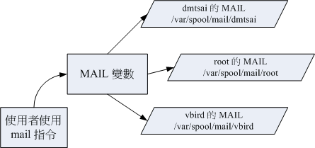

10.2 Shell 的变量功能
变量是 bash 环境中非常重要的一个玩意儿，我们知道 Linux 是多用户多任务的环境，每个人登陆系统都能取得一个 bash shell， 每个人都能够使用 bash 下达 mail 这个指令来收受“自己”的邮件等等。问题是， bash 是如何得知你的邮件信箱是哪个文件？ 这就需要“变量”的帮助啦！所以，你说变量重不重要呢？下面我们将介绍重要的环境变量、变量的取用与设置等数据， 呼呼！动动脑时间又来到啰！^_^
10.2.1 什么是变量？
那么，什么是“变量”呢？简单的说，就是让某一个特定字串代表不固定的内容就是了。举个大家在国中都会学到的数学例子， 那就是：“ y = ax + b ”这东西，在等号左边的（y）就是变量，在等号右边的（ax+b）就是变量内容。 要注意的是，左边是未知数，右边是已知数喔！ 讲的更简单一点，我们可以“用一个简单的 "字眼" 来取代另一个比较复杂或者是容易变动的数据”。这有什么好处啊？最大的好处就是“方便！”。
- 变量的可变性与方便性
举例来说，我们每个帐号的邮件信箱默认是以 MAIL 这个变量来进行存取的， 当 dmtsai 这个使用者登陆时，他便会取得 MAIL 这个变量，而这个变量的内容其实就是 /var/spool/mail/dmtsai， 那如果 vbird 登陆呢？他取得的 MAIL 这个变量的内容其实就是 /var/spool/mail/vbird 。 而我们使用信件读取指令 mail 来读取自己的邮件信箱时，嘿嘿，这支程序可以直接读取 MAIL 这个变量的内容， 就能够自动的分辨出属于自己的信箱信件啰！这样一来，设计程序的设计师就真的很方便的啦！
图10.2.1、程序、变量与不同使用者的关系
如上图所示，由于系统已经帮我们规划好 MAIL 这个变量，所以使用者只要知道 mail 这个指令如何使用即可， mail 会主动的取用 MAIL 这个变量，就能够如上图所示的取得自己的邮件信箱了！（注意大小写，小写的 mail 是指令， 大写的 MAIL 则是变量名称喔！）
那么使用变量真的比较好吗？这是当然的！想像一个例子，如果 mail 这个指令将 root 收信的邮件信箱 （mailbox） 文件名为 /var/spool/mail/root 直接写入程序码中。那么当 dmtsai 要使用 mail 时，将会取得 /var/spool/mail/root 这个文件的内容！ 不合理吧！所以你就需要帮 dmtsai 也设计一个 mail 的程序，将 /var/spool/mail/dmtsai 写死到 mail 的程序码当中！ 天呐！那系统要有多少个 mail 指令啊？反过来说，使用变量就变的很简单了！因为你不需要更动到程序码啊！ 只要将 MAIL 这个变量带入不同的内容即可让所有使用者通过 mail 取得自己的信件！当然简单多了！
- 影响 bash 环境操作的变量
某些特定变量会影响到 bash 的环境喔！举例来说，我们前面已经提到过很多次的那个 PATH 变量！ 你能不能在任何目录下执行某个指令，与 PATH 这个变量有很大的关系。例如你下达 ls 这个指令时，系统就是通过 PATH 这个变量里面的内容所记录的路径顺序来搜寻指令的呢！如果在搜寻完 PATH 变量内的路径还找不到 ls 这个指令时， 就会在屏幕上显示“ command not found ”的错误讯息了。
如果说的学理一点，那么由于在 Linux System 下面，所有的线程都是需要一个执行码， 而就如同上面提到的，你“真正以 shell 来跟 Linux 沟通，是在正确的登陆 Linux 之后！”这个时候你就有一个 bash 的执行程序，也才可以真正的经由 bash 来跟系统沟通啰！而在进入 shell 之前，也正如同上面提到的，由于系统需要一些变量来提供他数据的存取 （或者是一些环境的设置参数值， 例如是否要显示彩色等等的） ，所以就有一些所谓的“环境变量” 需要来读入系统中了！这些环境变量例如 PATH、HOME、MAIL、SHELL 等等，都是很重要的， 为了区别与自订变量的不同，环境变量通常以大写字符来表示呢！
- 脚本程序设计 （shell script） 的好帮手
这些还都只是系统默认的变量的目的，如果是个人的设置方面的应用呢：例如你要写一个大型的 script 时，有些数据因为可能由于使用者习惯的不同而有差异，比如说路径好了，由于该路径在 script 被使用在相当多的地方，如果下次换了一部主机，都要修改 script 里面的所有路径，那么我一定会疯掉！ 这个时候如果使用变量，而将该变量的定义写在最前面，后面相关的路径名称都以变量来取代， 嘿嘿！那么你只要修改一行就等于修改整篇 script 了！方便的很！所以，良好的程序设计师都会善用变量的定义！
 图10.2.2、变量应用于 shell script 的示意图
图10.2.2、变量应用于 shell script 的示意图
最后我们就简单的对“什么是变量”作个简单定义好了： “变量就是以一组文字或符号等，来取代一些设置或者是一串保留的数据！”， 例如：我设置了“myname”就是“VBird”，所以当你读取 myname 这个变量的时候，系统自然就会知道！哈！那就是 VBird 啦！ 那么如何“显示变量”呢？这就需要使用到 echo 这个指令啦！
10.2.2 变量的取用与设置：echo, 变量设置规则, unset
说的口沫横飞的，也不知道“变量”与“变量代表的内容”有啥关系？ 那我们就将“变量”的“内容”拿出来给您瞧瞧好了。你可以利用 echo 这个指令来取用变量， 但是，变量在被取用时，前面必须要加上钱字号“ $ ”才行，举例来说，要知道 PATH 的内容，该如何是好？
- 变量的取用: echo
[dmtsai@study ~]$ echo $variable
[dmtsai@study ~]$ echo $PATH
/usr/local/bin:/usr/bin:/usr/local/sbin:/usr/sbin:/home/dmtsai/.local/bin:/home/dmtsai/bin
[dmtsai@study ~]$ echo ${PATH} # 近年来，鸟哥比较偏向使用这种格式喔！
变量的取用就如同上面的范例，利用 echo 就能够读出，只是需要在变量名称前面加上 $ ， 或者是以 ${变量} 的方式来取用都可以！当然啦，那个 echo 的功能可是很多的， 我们这里单纯是拿 echo 来读出变量的内容而已，更多的 echo 使用，请自行给他 man echo 吧！ ^_^
例题：请在屏幕上面显示出您的环境变量 HOME 与 MAIL：答：echo $HOME 或者是 echo ${HOME}，echo $MAIL 或者是 echo ${MAIL}
现在我们知道了变量与变量内容之间的相关性了，好了，那么我要如何“设置”或者是“修改” 某个变量的内容啊？很简单啦！用“等号（=）”连接变量与他的内容就好啦！举例来说： 我要将 myname 这个变量名称的内容设置为 VBird ，那么：
[dmtsai@study ~]$ echo ${myname}
<==这里并没有任何数据～因为这个变量尚未被设置！是空的！
[dmtsai@study ~]$ myname=VBird
[dmtsai@study ~]$ echo ${myname}
VBird <==出现了！因为这个变量已经被设置了！
瞧！如此一来，这个变量名称 myname 的内容就带有 VBird 这个数据啰～ 而由上面的例子当中，我们也可以知道： 在 bash 当中，当一个变量名称尚未被设置时，默认的内容是“空”的。 另外，变量在设置时，还是需要符合某些规定的，否则会设置失败喔！这些规则如下所示啊！

Tips 要请各位读者注意喔，每一种 shell 的语法都不相同～在变量的使用上，bash 在你没有设置的变量中强迫去 echo 时，它会显示出空的值。 在其他某些 shell 中，随便去 echo 一个不存在的变量，它是会出现错误讯息的喔！要注意！要注意！
变量的设置规则
变量与变量内容以一个等号“=”来链接，如下所示： “myname=VBird”
等号两边不能直接接空白字符，如下所示为错误： “myname = VBird”或“myname=VBird Tsai”
变量名称只能是英文字母与数字，但是开头字符不能是数字，如下为错误： “2myname=VBird”
变量内容若有空白字符可使用双引号“"”或单引号“'”将变量内容结合起来，但
- 双引号内的特殊字符如 $ 等，可以保有原本的特性，如下所示： “var="lang is $LANG"”则“echo $var”可得“lang is zh_TW.UTF-8”
- 单引号内的特殊字符则仅为一般字符 （纯文本），如下所示： “var='lang is $LANG'”则“echo $var”可得“lang is $LANG”
可用跳脱字符“ \ ”将特殊符号（如 [Enter], $, \, 空白字符, '等）变成一般字符，如： “myname=VBird\ Tsai”
在一串指令的执行中，还需要借由其他额外的指令所提供的信息时，可以使用反单引号“
指令”或 “$（指令）”。特别注意，那个 ` 是键盘上方的数字键 1 左边那个按键，而不是单引号！ 例如想要取得核心版本的设置： “version=$（uname -r）”再“echo $version”可得“3.10.0-229.el7.x86_64”若该变量为扩增变量内容时，则可用 "$变量名称" 或 ${变量} 累加内容，如下所示： “PATH="$PATH":/home/bin”或“PATH=${PATH}:/home/bin”
若该变量需要在其他子程序执行，则需要以 export 来使变量变成环境变量： “export PATH”
通常大写字符为系统默认变量，自行设置变量可以使用小写字符，方便判断 （纯粹依照使用者兴趣与嗜好） ；
取消变量的方法为使用 unset ：“unset 变量名称”例如取消 myname 的设置： “unset myname”
下面让鸟哥举几个例子来让你试看看，就知道怎么设置好你的变量啰！
范例一：设置一变量 name ，且内容为 VBird
[dmtsai@study ~]$ 12name=VBird
bash: 12name=VBird: command not found... <==屏幕会显示错误！因为不能以数字开头！
[dmtsai@study ~]$ name = VBird <==还是错误！因为有空白！
[dmtsai@study ~]$ name=VBird <==OK 的啦！
范例二：承上题，若变量内容为 VBird's name 呢，就是变量内容含有特殊符号时：
[dmtsai@study ~]$ name=VBird's name
# 单引号与双引号必须要成对，在上面的设置中仅有一个单引号，因此当你按下 enter 后，
# 你还可以继续输入变量内容。这与我们所需要的功能不同，失败啦！
# 记得，失败后要复原请按下 [ctrl]-c 结束！
[dmtsai@study ~]$ name="VBird's name" <==OK 的啦！
# 指令是由左边向右找→，先遇到的引号先有用，因此如上所示， 单引号变成一般字符！
[dmtsai@study ~]$ name='VBird's name' <==失败的啦！
# 因为前两个单引号已成对，后面就多了一个不成对的单引号了！因此也就失败了！
[dmtsai@study ~]$ name=VBird\'s\ name <==OK 的啦！
# 利用反斜线 （\） 跳脱特殊字符，例如单引号与空白键，这也是 OK 的啦！
范例三：我要在 PATH 这个变量当中“累加”:/home/dmtsai/bin 这个目录
[dmtsai@study ~]$ PATH=$PATH:/home/dmtsai/bin
[dmtsai@study ~]$ PATH="$PATH":/home/dmtsai/bin
[dmtsai@study ~]$ PATH=${PATH}:/home/dmtsai/bin
# 上面这三种格式在 PATH 里头的设置都是 OK 的！但是下面的例子就不见得啰！
范例四：承范例三，我要将 name 的内容多出 "yes" 呢？
[dmtsai@study ~]$ name=$nameyes
# 知道了吧？如果没有双引号，那么变量成了啥？name 的内容是 $nameyes 这个变量！
# 呵呵！我们可没有设置过 nameyes 这个变量呐！所以，应该是下面这样才对！
[dmtsai@study ~]$ name="$name"yes
[dmtsai@study ~]$ name=${name}yes <==以此例较佳！
范例五：如何让我刚刚设置的 name=VBird 可以用在下个 shell 的程序？
[dmtsai@study ~]$ name=VBird
[dmtsai@study ~]$ bash <==进入到所谓的子程序
[dmtsai@study ~]$ echo $name <==子程序：再次的 echo 一下；
<==嘿嘿！并没有刚刚设置的内容喔！
[dmtsai@study ~]$ exit <==子程序：离开这个子程序
[dmtsai@study ~]$ export name
[dmtsai@study ~]$ bash <==进入到所谓的子程序
[dmtsai@study ~]$ echo $name <==子程序：在此执行！
VBird <==看吧！出现设置值了！
[dmtsai@study ~]$ exit <==子程序：离开这个子程序
什么是“子程序”呢？就是说，在我目前这个 shell 的情况下，去启用另一个新的 shell ，新的那个 shell 就是子程序啦！在一般的状态下，父程序的自订变量是无法在子程序内使用的。但是通过 export 将变量变成环境变量后，就能够在子程序下面应用了！很不赖吧！至于程序的相关概念， 我们会在第十六章程序管理当中提到的喔！
范例六：如何进入到您目前核心的模块目录？
[dmtsai@study ~]$ cd /lib/modules/`uname -r`/kernel
[dmtsai@study ~]$ cd /lib/modules/$（uname -r）/kernel # 以此例较佳！
每个 Linux 都能够拥有多个核心版本，且几乎 distribution 的核心版本都不相同。以 CentOS 7.1 （未更新前） 为例，他的默认核心版本是 3.10.0-229.el7.x86_64 ，所以核心模块目录在 /lib/modules/3.10.0-229.el7.x86_64/kernel/ 内。 也由于每个 distributions 的这个值都不相同，但是我们却可以利用 uname -r 这个指令先取得版本信息。所以啰，就可以通过上面指令当中的内含指令 $（uname -r） 先取得版本输出到 cd ... 那个指令当中，就能够顺利的进入目前核心的驱动程序所放置的目录啰！很方便吧！
其实上面的指令可以说是作了两次动作，亦即是：
- 先进行反单引号内的动作“uname -r”并得到核心版本为 3.10.0-229.el7.x86_64
- 将上述的结果带入原指令，故得指令为：“cd /lib/modules/3.10.0-229.el7.x86_64/kernel/”
Tips 为什么鸟哥比较建议记忆 $（ command ） 呢？还记得小时候学数学的加减乘除，我们都知道得要先乘除后加减。那如果硬要先加减再乘除呢？ 当然就是加上括号 （） 来处理即可啊！所以啰，这个指令的处理方式也差不多，只是括号左边得要加个钱字号就是了！
范例七：取消刚刚设置的 name 这个变量内容
[dmtsai@study ~]$ unset name
根据上面的案例你可以试试看！就可以了解变量的设置啰！这个是很重要的呦！请勤加练习！ 其中，较为重要的一些特殊符号的使用啰！例如单引号、双引号、跳脱字符、钱字号、反单引号等等，下面的例题想一想吧！
例题：在变量的设置当中，单引号与双引号的用途有何不同？ 答：单引号与双引号的最大不同在于双引号仍然可以保有变量的内容，但单引号内仅能是一般字符 ，而不会有特殊符号。我们以下面的例子做说明：假设您定义了一个变量， name=VBird ，现在想以 name 这个变量的内容定义出 myname 显示 VBird its me 这个内容，要如何订定呢？
> [dmtsai@study ~]$ name=VBird > [dmtsai@study ~]$ echo $name > VBird > [dmtsai@study ~]$ myname="$name its me" > [dmtsai@study ~]$ echo $myname > VBird its me > [dmtsai@study ~]$ myname='$name its me' > [dmtsai@study ~]$ echo $myname > $name its me
发现了吗？没错！使用了单引号的时候，那么 $name 将失去原有的变量内容，仅为一般字符的显示型态而已！这里必需要特别小心在意！
例题：在指令下达的过程中，反单引号（ ）这个符号代表的意义为何？答：在一串指令中，在 之内的指令将会被先执行，而其执行出来的结果将做为外部的输入信息！例如 uname -r 会显示出目前的核心版本，而我们的核心版本在 /lib/modules 里面，因此，你可以先执行 uname -r 找出核心版本，然后再以“ cd 目录”到该目录下，当然也可以执行如同上面范例六的执行内容啰。
另外再举个例子，我们也知道， locate 指令可以列出所有的相关文件文件名，但是，如果我想要知道各个文件的权限呢？举例来说，我想要知道每个 crontab 相关文件名的权限：
> [dmtsai@study ~]$ ls -ld locate crontab
> [dmtsai@study ~]$ ls -ld $（locate crontab）
如此一来，先以 locate 将文件名数据都列出来，再以 ls 指令来处理的意思啦！瞭了吗？ ^_^
例题：若你有一个常去的工作目录名称为：“/cluster/server/work/taiwan_2015/003/”，如何进行该目录的简化？答：在一般的情况下，如果你想要进入上述的目录得要“cd /cluster/server/work/taiwan_2015/003/”， 以鸟哥自己的案例来说，鸟哥跑数值模式常常会设置很长的目录名称（避免忘记），但如此一来变换目录就很麻烦。 此时，鸟哥习惯利用下面的方式来降低指令下达错误的问题：
> [dmtsai@study ~]$ work="/cluster/server/work/taiwan_2015/003/" > [dmtsai@study ~]$ cd $work
未来我想要使用其他目录作为我的模式工作目录时，只要变更 work 这个变量即可！而这个变量又可以在 bash 的配置文件（~/.bashrc）中直接指定，那我每次登陆只要执行“ cd $work ”就能够去到数值模式仿真的工作目录了！是否很方便呢？ ^_^
10.2.3 环境变量的功能
环境变量可以帮我们达到很多功能～包括主文件夹的变换啊、提示字符的显示啊、可执行文件搜寻的路径啊等等的， 还有很多很多啦！那么，既然环境变量有那么多的功能，问一下，目前我的 shell 环境中， 有多少默认的环境变量啊？我们可以利用两个指令来查阅，分别是 env 与 export 呢！
- 用 env 观察环境变量与常见环境变量说明
范例一：列出目前的 shell 环境下的所有环境变量与其内容。
[dmtsai@study ~]$ env
HOSTNAME=study.centos.vbird <== 这部主机的主机名称
TERM=xterm <== 这个终端机使用的环境是什么类型
SHELL=/bin/bash <== 目前这个环境下，使用的 Shell 是哪一个程序？
HISTSIZE=1000 <== “记录指令的笔数”在 CentOS 默认可记录 1000 笔
OLDPWD=/home/dmtsai <== 上一个工作目录的所在
LC_ALL=en_US.utf8 <== 由于语系的关系，鸟哥偷偷丢上来的一个设置
USER=dmtsai <== 使用者的名称啊！
LS_COLORS=rs=0:di=01;34:ln=01;36:mh=00:pi=40;33:so=01;35:do=01;35:bd=40;33;01:cd=40;33;01:
or=40;31;01:mi=01;05;37;41:su=37;41:sg=30;43:ca=30;41:tw=30;42:ow=34;42:st=37;44:ex=01;32:
*.tar=01... <== 一些颜色显示
MAIL=/var/spool/mail/dmtsai <== 这个使用者所取用的 mailbox 位置
PATH=/usr/local/bin:/usr/bin:/usr/local/sbin:/usr/sbin:/home/dmtsai/.local/bin:/home/dmtsai/bin
PWD=/home/dmtsai <== 目前使用者所在的工作目录 （利用 pwd 取出！）
LANG=zh_TW.UTF-8 <== 这个与语系有关，下面会再介绍！
HOME=/home/dmtsai <== 这个使用者的主文件夹啊！
LOGNAME=dmtsai <== 登陆者用来登陆的帐号名称
_=/usr/bin/env <== 上一次使用的指令的最后一个参数（或指令本身）
env 是 environment （环境） 的简写啊，上面的例子当中，是列出来所有的环境变量。当然，如果使用 export 也会是一样的内容～ 只不过， export 还有其他额外的功能就是了，我们等一下再提这个 export 指令。 那么上面这些变量有些什么功用呢？下面我们就一个一个来分析分析！
HOME 代表使用者的主文件夹。还记得我们可以使用 cd ~ 去到自己的主文件夹吗？或者利用 cd 就可以直接回到使用者主文件夹了。那就是取用这个变量啦～ 有很多程序都可能会取用到这个变量的值！
SHELL 告知我们，目前这个环境使用的 SHELL 是哪支程序？ Linux 默认使用 /bin/bash 的啦！
HISTSIZE 这个与“历史命令”有关，亦即是， 我们曾经下达过的指令可以被系统记录下来，而记录的“笔数”则是由这个值来设置的。
MAIL 当我们使用 mail 这个指令在收信时，系统会去读取的邮件信箱文件 （mailbox）。
PATH 就是可执行文件搜寻的路径啦～目录与目录中间以冒号（:）分隔， 由于文件的搜寻是依序由 PATH 的变量内的目录来查询，所以，目录的顺序也是重要的喔。
LANG 这个重要！就是语系数据啰～很多讯息都会用到他， 举例来说，当我们在启动某些 perl 的程序语言文件时，他会主动的去分析语系数据文件， 如果发现有他无法解析的编码语系，可能会产生错误喔！一般来说，我们中文编码通常是 zh_TW.Big5 或者是 zh_TW.UTF-8，这两个编码偏偏不容易被解译出来，所以，有的时候，可能需要修订一下语系数据。 这部分我们会在下个小节做介绍的！
RANDOM 这个玩意儿就是“随机乱数”的变量啦！目前大多数的 distributions 都会有乱数产生器，那就是 /dev/random 这个文件。 我们可以通过这个乱数文件相关的变量 （$RANDOM） 来随机取得乱数值喔。在 BASH 的环境下，这个 RANDOM 变量的内容，介于 0~32767 之间，所以，你只要 echo $RANDOM 时，系统就会主动的随机取出一个介于 0~32767 的数值。万一我想要使用 0~9 之间的数值呢？呵呵～利用 declare 宣告数值类型， 然后这样做就可以了：
[dmtsai@study ~]$ declare -i number=$RANDOM*10/32768 ; echo $number 8 <== 此时会随机取出 0~9 之间的数值喔！
大致上是有这些环境变量啦～里面有些比较重要的参数，在下面我们都会另外进行一些说明的～
- 用 set 观察所有变量 （含环境变量与自订变量）
bash 可不只有环境变量喔，还有一些与 bash 操作接口有关的变量，以及使用者自己定义的变量存在的。 那么这些变量如何观察呢？这个时候就得要使用 set 这个指令了。 set 除了环境变量之外， 还会将其他在 bash 内的变量通通显示出来哩！信息很多，下面鸟哥仅列出几个重要的内容：
[dmtsai@study ~]$ set
BASH=/bin/bash <== bash 的主程序放置路径
BASH_VERSINFO=（[0]="4" [1]="2" [2]="46" [3]="1" [4]="release" [5]="x86_64-redhat-linux-gnu"）
BASH_VERSION='4.2.46（1）-release' <== 这两行是 bash 的版本啊！
COLUMNS=90 <== 在目前的终端机环境下，使用的字段有几个字符长度
HISTFILE=/home/dmtsai/.bash_history <== 历史命令记录的放置文件，隐藏文件
HISTFILESIZE=1000 <== 存起来（与上个变量有关）的文件之指令的最大纪录笔数。
HISTSIZE=1000 <== 目前环境下，内存中记录的历史命令最大笔数。
IFS=$' \t\n' <== 默认的分隔符号
LINES=20 <== 目前的终端机下的最大行数
MACHTYPE=x86_64-redhat-linux-gnu <== 安装的机器类型
OSTYPE=linux-gnu <== 操作系统的类型！
PS1='[\u@\h \W]\$ ' <== PS1 就厉害了。这个是命令提示字符，也就是我们常见的
[root@www ~]# 或 [dmtsai ~]$ 的设置值啦！可以更动的！
PS2='> ' <== 如果你使用跳脱符号 （\） 第二行以后的提示字符也
$ <== 目前这个 shell 所使用的 PID
? <== 刚刚执行完指令的回传值。
...
# 有许多可以使用的函数库功能被鸟哥取消啰！请自行查阅！
一般来说，不论是否为环境变量，只要跟我们目前这个 shell 的操作接口有关的变量， 通常都会被设置为大写字符，也就是说，“基本上，在 Linux 默认的情况中，使用{大写的字母}来设置的变量一般为系统内定需要的变量”。 OK！OK！那么上头那些变量当中，有哪些是比较重要的？大概有这几个吧！
- PS1：（提示字符的设置）
这是 PS1 （数字的 1 不是英文字母），这个东西就是我们的“命令提示字符”喔！ 当我们每次按下 [Enter] 按键去执行某个指令后，最后要再次出现提示字符时， 就会主动去读取这个变量值了。上头 PS1 内显示的是一些特殊符号，这些特殊符号可以显示不同的信息， 每个 distributions 的 bash 默认的 PS1 变量内容可能有些许的差异，不要紧，“习惯你自己的习惯”就好了。 你可以用 man bash [3]去查询一下 PS1 的相关说明，以理解下面的一些符号意义。
- \d ：可显示出“星期 月 日”的日期格式，如："Mon Feb 2"
- \H ：完整的主机名称。举例来说，鸟哥的练习机为“study.centos.vbird”
- \h ：仅取主机名称在第一个小数点之前的名字，如鸟哥主机则为“study”后面省略
- \t ：显示时间，为 24 小时格式的“HH:MM:SS”
- \T ：显示时间，为 12 小时格式的“HH:MM:SS”
- \A ：显示时间，为 24 小时格式的“HH:MM”
- \@ ：显示时间，为 12 小时格式的“am/pm”样式
- \u ：目前使用者的帐号名称，如“dmtsai”；
- \v ：BASH 的版本信息，如鸟哥的测试主机版本为 4.2.46（1）-release，仅取“4.2”显示
- \w ：完整的工作目录名称，由根目录写起的目录名称。但主文件夹会以 ~ 取代；
- \W ：利用 basename 函数取得工作目录名称，所以仅会列出最后一个目录名。
- # ：下达的第几个指令。
- $ ：提示字符，如果是 root 时，提示字符为 # ，否则就是 $ 啰～
好了，让我们来看看 CentOS 默认的 PS1 内容吧：“[\u@\h \W]$ ”，现在你知道那些反斜线后的数据意义了吧？ 要注意喔！那个反斜线后的数据为 PS1 的特殊功能，与 bash 的变量设置没关系啦！不要搞混了喔！ 那你现在知道为何你的命令提示字符是：“ [dmtsai@study ~]$ ”了吧？好了，那么假设我想要有类似下面的提示字符：
[dmtsai@study /home/dmtsai 16:50 #12]$
那个 # 代表第 12 次下达的指令。那么应该如何设置 PS1 呢？可以这样啊：
[dmtsai@study ~]$ cd /home
[dmtsai@study home]$ PS1='[\u@\h \w \A #\#]\$ '
[dmtsai@study /home 17:02 #85]$
# 看到了吗？提示字符变了！变的很有趣吧！其中，那个 #85 比较有趣，
# 如果您再随便输入几次 ls 后，该数字就会增加喔！为啥？上面有说明滴！
- $：（关于本 shell 的 PID）
钱字号本身也是个变量喔！这个咚咚代表的是“目前这个 Shell 的线程代号”，亦即是所谓的 PID （Process ID）。 更多的程序观念，我们会在第四篇的时候提及。想要知道我们的 shell 的 PID ，就可以用：“ echo $$ ”即可！出现的数字就是你的 PID 号码。
- ?：（关于上个执行指令的回传值）
虾密？问号也是一个特殊的变量？没错！在 bash 里面这个变量可重要的很！ 这个变量是：“上一个执行的指令所回传的值”， 上面这句话的重点是“上一个指令”与“回传值”两个地方。当我们执行某些指令时， 这些指令都会回传一个执行后的代码。一般来说，如果成功的执行该指令， 则会回传一个 0 值，如果执行过程发生错误，就会回传“错误代码”才对！一般就是以非为 0 的数值来取代。 我们以下面的例子来看看：
[dmtsai@study ~]$ echo $SHELL
/bin/bash <==可顺利显示！没有错误！
[dmtsai@study ~]$ echo $?
0 <==因为没问题，所以回传值为 0
[dmtsai@study ~]$ 12name=VBird
bash: 12name=VBird: command not found... <==发生错误了！bash回报有问题
[dmtsai@study ~]$ echo $?
127 <==因为有问题，回传错误代码（非为0）
# 错误代码回传值依据软件而有不同，我们可以利用这个代码来搜寻错误的原因喔！
[dmtsai@study ~]$ echo $?
0
# 咦！怎么又变成正确了？这是因为 "?" 只与“上一个执行指令”有关，
# 所以，我们上一个指令是执行“ echo $? ”，当然没有错误，所以是 0 没错！
- OSTYPE, HOSTTYPE, MACHTYPE：（主机硬件与核心的等级）
我们在第零章、计算机概论内的 CPU 等级说明中谈过 CPU ， 目前个人计算机的 CPU 主要分为 32/64 位，其中 32 位又可分为 i386, i586, i686，而 64 位则称为 x86_64。 由于不同等级的 CPU 指令集不太相同，因此你的软件可能会针对某些 CPU 进行最优化，以求取较佳的软件性能。 所以软件就有 i386, i686 及 x86_64 之分。以目前 （2015） 的主流硬件来说，几乎都是 x86_64 的天下！ 因此 CentOS 7 开始，已经不支持 i386 相容模式的安装光盘了～哇呜！进步的太快了！
要留意的是，较高阶的硬件通常会向下相容旧有的软件，但较高阶的软件可能无法在旧机器上面安装！ 我们在第二章就曾说明过， 这里再强调一次，你可以在 x86_64 的硬件上安装 i386 的 Linux 操作系统，但是你无法在 i686 的硬件上安装 x86_64 的 Linux 操作系统！这点得要牢记在心！
- export： 自订变量转成环境变量
谈了 env 与 set 现在知道有所谓的环境变量与自订变量，那么这两者之间有啥差异呢？其实这两者的差异在于“ 该变量是否会被子程序所继续引用”啦！唔！那么啥是父程序？子程序？ 这就得要了解一下指令的下达行为了。
当你登陆 Linux 并取得一个 bash 之后，你的 bash 就是一个独立的程序，这个程序的识别使用的是一个称为程序识别码，被称为 PID 的就是。 接下来你在这个 bash 下面所下达的任何指令都是由这个 bash 所衍生出来的，那些被下达的指令就被称为子程序了。 我们可以用下面的图示来简单的说明一下父程序与子程序的概念：
 图10.2.3、程序相关性示意图
图10.2.3、程序相关性示意图
如上所示，我们在原本的 bash 下面执行另一个 bash ，结果操作的环境接口会跑到第二个 bash 去（就是子程序）， 那原本的 bash 就会在暂停的情况 （睡着了，就是 sleep）。整个指令运行的环境是实线的部分！若要回到原本的 bash 去， 就只有将第二个 bash 结束掉 （下达 exit 或 logout） 才行。更多的程序概念我们会在第四篇谈及，这里只要有这个概念即可。
这个程序概念与变量有啥关系啊？关系可大了！因为子程序仅会继承父程序的环境变量， 子程序不会继承父程序的自订变量啦！所以你在原本 bash 的自订变量在进入了子程序后就会消失不见， 一直到你离开子程序并回到原本的父程序后，这个变量才会又出现！
换个角度来想，也就是说，如果我能将自订变量变成环境变量的话，那不就可以让该变量值继续存在于子程序了？ 呵呵！没错！此时，那个 export 指令就很有用啦！如你想要让该变量内容继续的在子程序中使用，那么就请执行：
[dmtsai@study ~]$ export 变量名称
这东西用在“分享自己的变量设置给后来调用的文件或其他程序”啦！ 像鸟哥常常在自己的主文件后面调用其他附属文件（类似函数的功能），但是主文件与附属文件内都有相同的变量名称， 若一再重复设置时，要修改也很麻烦，此时只要在原本的第一个文件内设置好“ export 变量 ”， 后面所调用的文件就能够使用这个变量设置了！而不需要重复设置，这非常实用于 shell script 当中喔！ 如果仅下达 export 而没有接变量时，那么此时将会把所有的“环境变量”秀出来喔！例如：
[dmtsai@study ~]$ export
declare -x HISTSIZE="1000"
declare -x HOME="/home/dmtsai"
declare -x HOSTNAME="study.centos.vbird"
declare -x LANG="zh_TW.UTF-8"
declare -x LC_ALL="en_US.utf8"
# 后面的鸟哥就都直接省略了！不然....浪费版面～ ^_^
那如何将环境变量转成自订变量呢？可以使用本章后续介绍的 declare 呢！
10.2.4 影响显示结果的语系变量 （locale）
还记得我们在第四章里面提到的语系问题吗？ 就是当我们使用 man command 的方式去查询某个数据的说明文档时，该说明文档的内容可能会因为我们使用的语系不同而产生乱码。 另外，利用 ls 查询文件的时间时，也可能会有乱码出现在时间的部分。那个问题其实就是语系的问题啦。
目前大多数的 Linux distributions 已经都是支持日渐流行的万国码了，也都支持大部分的国家语系。 那么我们的 Linux 到底支持了多少的语系呢？这可以由 locale 这个指令来查询到喔！
[dmtsai@study ~]$ locale -a
....（前面省略）....
zh_TW
zh_TW.big5 <==大五码的中文编码
zh_TW.euctw
zh_TW.utf8 <==万国码的中文编码
zu_ZA
zu_ZA.iso88591
zu_ZA.utf8
正体中文语系至少支持了两种以上的编码，一种是目前还是很常见的 big5 ，另一种则是越来越热门的 utf-8 编码。 那么我们如何修订这些编码呢？其实可以通过下面这些变量的说：
[dmtsai@study ~]$ locale <==后面不加任何选项与参数即可！
LANG=en_US <==主语言的环境
LC_CTYPE="en_US" <==字符（文字）辨识的编码
LC_NUMERIC="en_US" <==数字系统的显示讯息
LC_TIME="en_US" <==时间系统的显示数据
LC_COLLATE="en_US" <==字串的比较与排序等
LC_MONETARY="en_US" <==币值格式的显示等
LC_MESSAGES="en_US" <==讯息显示的内容，如功能表、错误讯息等
LC_ALL= <==整体语系的环境
....（后面省略）....
基本上，你可以逐一设置每个与语系有关的变量数据，但事实上，如果其他的语系变量都未设置， 且你有设置 LANG 或者是 LC_ALL 时，则其他的语系变量就会被这两个变量所取代！ 这也是为什么我们在 Linux 当中，通常说明仅设置 LANG 或 LC_ALL 这两个变量而已，因为他是最主要的设置变量！ 好了，那么你应该要觉得奇怪的是，为什么在 Linux 主机的终端机接口 （tty1 ~ tty6） 的环境下，如果设置“ LANG=zh_TW.utf8 ”这个设置值生效后，使用 man 或者其他讯息输出时， 都会有一堆乱码，尤其是使用 ls -l 这个参数时？
因为在 Linux 主机的终端机接口环境下是无法显示像中文这么复杂的编码文字， 所以就会产生乱码了。也就是如此，我们才会必须要在 tty1 ~ tty6 的环境下， 加装一些中文化接口的软件，才能够看到中文啊！不过，如果你是在 MS Windows 主机以远端连线服务器的软件连线到主机的话，那么，嘿嘿！其实命令行确实是可以看到中文的。 此时反而你得要在 LC_ALL 设置中文编码才好呢！
Tips 无论如何，如果发生一些乱码的问题，那么设置系统里面保有的语系编码， 例如： en_US 或 en_US.utf8 等等的设置，应该就 OK 的啦！好了，那么系统默认支持多少种语系呢？ 当我们使用 locale 时，系统是列出目前 Linux 主机内保有的语系文件， 这些语系文件都放置在： /usr/lib/locale/ 这个目录中。
你当然可以让每个使用者自己去调整自己喜好的语系，但是整体系统默认的语系定义在哪里呢？ 其实就是在 /etc/locale.conf 啰！这个文件在 CentOS 7.x 的内容有点像这样：
[dmtsai@study ~]$ cat /etc/locale.conf
LANG=zh_TW.utf8
LC_NUMERIC=zh_TW.UTF-8
LC_TIME=zh_TW.UTF-8
LC_MONETARY=zh_TW.UTF-8
LC_PAPER=zh_TW.UTF-8
LC_MEASUREMENT=zh_TW.UTF-8
因为鸟哥在第三章的安装时选择的是中文语系安装画面， 所以这个文件默认就会使用中文编码啦！你也可以自行将他改成你想要的语系编码即可。
Tips 假设你有一个纯文本原本是在 Windows 下面创建的，那么这个文件默认可能是 big5 的编码格式。 在你将这个文件上传到 Linux 主机后，在 X window 下面打开时，咦！怎么中文字通通变成乱码了？ 别担心！因为如上所示， Linux 目前大多默认是万国码显示嘛！你只要将打开该文件的软件编码由 utf8 改成 big5 就能够看到正确的中文了！
例题：鸟哥原本是中文语系，所有显示的数据通通是中文。但为了网页显示的关系，需要将输出转成英文 （en_US.utf8） 的语系来展示才行。 但鸟哥又不想要写入配置文件！毕竟是暂时显示用的～那该如何处理？答：其实不很难，重点是 LANG 及 LC_ALL 而已！但在 CentOS 7 当中，你要让 LC_ALL 生效时，得要使用 export 转成环境变量才行耶！ 所以就是这样搞：
[dmtsai@study ~]$ locale
LANG=zh_TW.UTF-8
LC_CTYPE="zh_TW.UTF-8"
LC_NUMERIC="zh_TW.UTF-8"
LC_TIME="zh_TW.UTF-8"
[dmtsai@study ~]$ LANG=en_US.utf8; locale
[dmtsai@study ~]$ export LC_ALL=en_US.utf8; locale # 你就会看到与上头有不同的语系啰！
10.2.5 变量的有效范围
虾密？变量也有使用的“范围”？没错啊～我们在上头的 export 指令说明中，就提到了这个概念了。如果在跑程序的时候，有父程序与子程序的不同程序关系时， 则“变量”可否被引用与 export 有关。被 export 后的变量，我们可以称他为“环境变量”！ 环境变量可以被子程序所引用，但是其他的自订变量内容就不会存在于子程序中。
Tips 在某些不同的书籍会谈到“全域变量, global variable”与“区域变量, local variable”。 在鸟哥的这个章节中，基本上你可以这样看待： 环境变量=全域变量 自订变量=区域变量
在学理方面，为什么环境变量的数据可以被子程序所引用呢？这是因为内存配置的关系！理论上是这样的：
- 当启动一个 shell，操作系统会分配一记忆区块给 shell 使用，此内存内之变量可让子程序取用
- 若在父程序利用 export 功能，可以让自订变量的内容写到上述的记忆区块当中（环境变量）；
- 当载入另一个 shell 时 （亦即启动子程序，而离开原本的父程序了），子 shell 可以将父 shell 的环境变量所在的记忆区块导入自己的环境变量区块当中。
通过这样的关系，我们就可以让某些变量在相关的程序之间存在，以帮助自己更方便的操作环境喔！ 不过要提醒的是，这个“环境变量”与“bash 的操作环境”意思不太一样，举例来说， PS1 并不是环境变量， 但是这个 PS1 会影响到 bash 的接口 （提示字符嘛）！相关性要厘清喔！^_^
10.2.6 变量键盘读取、阵列与宣告： read, array, declare
我们上面提到的变量设置功能，都是由命令行直接设置的，那么，可不可以让使用者能够经由键盘输入？ 什么意思呢？是否记得某些程序执行的过程当中，会等待使用者输入 "yes/no" 之类的讯息啊？ 在 bash 里面也有相对应的功能喔！此外，我们还可以宣告这个变量的属性，例如：阵列或者是数字等等的。下面就来看看吧！
- read
要读取来自键盘输入的变量，就是用 read 这个指令了。这个指令最常被用在 shell script 的撰写当中， 想要跟使用者对谈？用这个指令就对了。关于 script 的写法，我们会在第十三章介绍，下面先来瞧一瞧 read 的相关语法吧！
[dmtsai@study ~]$ read [-pt] variable
选项与参数：
-p ：后面可以接提示字符！
-t ：后面可以接等待的“秒数！”这个比较有趣～不会一直等待使用者啦！
范例一：让使用者由键盘输入一内容，将该内容变成名为 atest 的变量
[dmtsai@study ~]$ read atest
This is a test <==此时光标会等待你输入！请输入左侧文字看看
[dmtsai@study ~]$ echo ${atest}
This is a test <==你刚刚输入的数据已经变成一个变量内容！
范例二：提示使用者 30 秒内输入自己的大名，将该输入字串作为名为 named 的变量内容
[dmtsai@study ~]$ read -p "Please keyin your name: " -t 30 named
Please keyin your name: VBird Tsai <==注意看，会有提示字符喔！
[dmtsai@study ~]$ echo ${named}
VBird Tsai <==输入的数据又变成一个变量的内容了！
read 之后不加任何参数，直接加上变量名称，那么下面就会主动出现一个空白行等待你的输入（如范例一）。 如果加上 -t 后面接秒数，例如上面的范例二，那么 30 秒之内没有任何动作时， 该指令就会自动略过了～如果是加上 -p ，嘿嘿！在输入的光标前就会有比较多可以用的提示字符给我们参考！ 在指令的下达里面，比较美观啦！ ^_^
- declare / typeset
declare 或 typeset 是一样的功能，就是在“宣告变量的类型”。如果使用 declare 后面并没有接任何参数，那么 bash 就会主动的将所有的变量名称与内容通通叫出来，就好像使用 set 一样啦！ 那么 declare 还有什么语法呢？看看先：
[dmtsai@study ~]$ declare [-aixr] variable
选项与参数：
-a ：将后面名为 variable 的变量定义成为阵列 （array） 类型
-i ：将后面名为 variable 的变量定义成为整数数字 （integer） 类型
-x ：用法与 export 一样，就是将后面的 variable 变成环境变量；
-r ：将变量设置成为 readonly 类型，该变量不可被更改内容，也不能 unset
范例一：让变量 sum 进行 100+300+50 的加总结果
[dmtsai@study ~]$ sum=100+300+50
[dmtsai@study ~]$ echo ${sum}
100+300+50 <==咦！怎么没有帮我计算加总？因为这是文字体态的变量属性啊！
[dmtsai@study ~]$ declare -i sum=100+300+50
[dmtsai@study ~]$ echo ${sum}
450 <==瞭乎？？
由于在默认的情况下面， bash 对于变量有几个基本的定义：
- 变量类型默认为“字串”，所以若不指定变量类型，则 1+2 为一个“字串”而不是“计算式”。 所以上述第一个执行的结果才会出现那个情况的；
- bash 环境中的数值运算，默认最多仅能到达整数形态，所以 1/3 结果是 0；
现在你晓得为啥你需要进行变量宣告了吧？如果需要非字串类型的变量，那就得要进行变量的宣告才行啦！ 下面继续来玩些其他的 declare 功能。
范例二：将 sum 变成环境变量
[dmtsai@study ~]$ declare -x sum
[dmtsai@study ~]$ export | grep sum
declare -ix sum="450" <==果然出现了！包括有 i 与 x 的宣告！
范例三：让 sum 变成只读属性，不可更动！
[dmtsai@study ~]$ declare -r sum
[dmtsai@study ~]$ sum=tesgting
-bash: sum: readonly variable <==老天爷～不能改这个变量了！
范例四：让 sum 变成非环境变量的自订变量吧！
[dmtsai@study ~]$ declare +x sum <== 将 - 变成 + 可以进行“取消”动作
[dmtsai@study ~]$ declare -p sum <== -p 可以单独列出变量的类型
declare -ir sum="450" <== 看吧！只剩下 i, r 的类型，不具有 x 啰！
declare 也是个很有用的功能～尤其是当我们需要使用到下面的阵列功能时， 他也可以帮我们宣告阵列的属性喔！不过，老话一句，阵列也是在 shell script 比较常用的啦！ 比较有趣的是，如果你不小心将变量设置为“只读”，通常得要登出再登陆才能复原该变量的类型了！ @_@
- 阵列 （array） 变量类型
某些时候，我们必须使用阵列来宣告一些变量，这有什么好处啊？在一般人的使用上， 果然是看不出来有什么好处的！不过，如果您曾经写过程序的话，那才会比较了解阵列的意义～ 阵列对写数值程序的设计师来说，可是不能错过学习的重点之一哩！好！不啰唆～ 那么要如何设置阵列的变量与内容呢？在 bash 里头，阵列的设置方式是：
var[index]=content
意思是说，我有一个阵列名称为 var ，而这个阵列的内容为 var[1]=小明， var[2]=大明， var[3]=好明 .... 等等，那个 index 就是一些数字啦，重点是用中刮号 （[ ]） 来设置的。 目前我们 bash 提供的是一维阵列。老实说，如果您不必写一些复杂的程序， 那么这个阵列的地方，可以先略过，等到有需要再来学习即可！因为要制作出阵列， 通常与循环或者其他判断式交互使用才有比较高的存在意义！
范例：设置上面提到的 var[1] ～ var[3] 的变量。
[dmtsai@study ~]$ var[1]="small min"
[dmtsai@study ~]$ var[2]="big min"
[dmtsai@study ~]$ var[3]="nice min"
[dmtsai@study ~]$ echo "${var[1]}, ${var[2]}, ${var[3]}"
small min, big min, nice min
阵列的变量类型比较有趣的地方在于“读取”，一般来说，建议直接以 ${阵列} 的方式来读取，比较正确无误的啦！这也是为啥鸟哥一开始就建议你使用 ${变量} 来记忆的原因！
10.2.7 与文件系统及程序的限制关系： ulimit
想像一个状况：我的 Linux 主机里面同时登陆了十个人，这十个人不知怎么搞的， 同时打开了 100 个文件，每个文件的大小约 10MBytes ，请问一下， 我的 Linux 主机的内存要有多大才够？ 1010010 = 10000 MBytes = 10GBytes ... 老天爷，这样，系统不挂点才有鬼哩！为了要预防这个情况的发生，所以我们的 bash 是可以“限制使用者的某些系统资源”的，包括可以打开的文件数量， 可以使用的 CPU 时间，可以使用的内存总量等等。如何设置？用 ulimit 吧！
[dmtsai@study ~]$ ulimit [-SHacdfltu] [配额]
选项与参数：
-H ：hard limit ，严格的设置，必定不能超过这个设置的数值；
-S ：soft limit ，警告的设置，可以超过这个设置值，但是若超过则有警告讯息。
在设置上，通常 soft 会比 hard 小，举例来说，soft 可设置为 80 而 hard
设置为 100，那么你可以使用到 90 （因为没有超过 100），但介于 80~100 之间时，
系统会有警告讯息通知你！
-a ：后面不接任何选项与参数，可列出所有的限制额度；
-c ：当某些程序发生错误时，系统可能会将该程序在内存中的信息写成文件（除错用），
这种文件就被称为核心文件（core file）。此为限制每个核心文件的最大容量。
-f ：此 shell 可以创建的最大文件大小（一般可能设置为 2GB）单位为 KBytes
-d ：程序可使用的最大断裂内存（segment）容量；
-l ：可用于锁定 （lock） 的内存量
-t ：可使用的最大 CPU 时间 （单位为秒）
-u ：单一使用者可以使用的最大程序（process）数量。
范例一：列出你目前身份（假设为一般帐号）的所有限制数据数值
[dmtsai@study ~]$ ulimit -a
core file size （blocks, -c） 0 <==只要是 0 就代表没限制
data seg size （kBytes, -d） unlimited
scheduling priority （-e） 0
file size （blocks, -f） unlimited <==可创建的单一文件的大小
pending signals （-i） 4903
max locked memory （kBytes, -l） 64
max memory size （kBytes, -m） unlimited
open files （-n） 1024 <==同时可打开的文件数量
pipe size （512 Bytes, -p） 8
POSIX message queues （Bytes, -q） 819200
real-time priority （-r） 0
stack size （kBytes, -s） 8192
cpu time （seconds, -t） unlimited
max user processes （-u） 4096
virtual memory （kBytes, -v） unlimited
file locks （-x） unlimited
范例二：限制使用者仅能创建 10MBytes 以下的容量的文件
[dmtsai@study ~]$ ulimit -f 10240
[dmtsai@study ~]$ ulimit -a | grep 'file size'
core file size （blocks, -c） 0
file size （blocks, -f） 10240 <==最大量为10240Kbyes，相当10MBytes
[dmtsai@study ~]$ dd if=/dev/zero of=123 bs=1M count=20
File size limit exceeded （core dumped） <==尝试创建 20MB 的文件，结果失败了！
[dmtsai@study ~]$ rm 123 <==赶快将这个文件删除啰！同时你得要登出再次的登陆才能解开 10M 的限制
还记得我们在第七章 Linux 磁盘文件系统里面提到过，单一 filesystem 能够支持的单一文件大小与 block 的大小有关。但是文件系统的限制容量都允许的太大了！如果想要让使用者创建的文件不要太大时， 我们是可以考虑用 ulimit 来限制使用者可以创建的文件大小喔！利用 ulimit -f 就可以来设置了！例如上面的范例二，要注意单位喔！单位是 KBytes。 若改天你一直无法创建一个大容量的文件，记得瞧一瞧 ulimit 的信息喔！
Tips 想要复原 ulimit 的设置最简单的方法就是登出再登陆，否则就是得要重新以 ulimit 设置才行！ 不过，要注意的是，一般身份使用者如果以 ulimit 设置了 -f 的文件大小， 那么他“只能继续减小文件大小，不能增加文件大小喔！”另外，若想要管控使用者的 ulimit 限值， 可以参考第十三章的 pam 的介绍。
10.2.8 变量内容的删除、取代与替换 （Optional）
变量除了可以直接设置来修改原本的内容之外，有没有办法通过简单的动作来将变量的内容进行微调呢？ 举例来说，进行变量内容的删除、取代与替换等！是可以的！我们可以通过几个简单的小步骤来进行变量内容的微调喔！ 下面就来试试看！
- 变量内容的删除与取代
变量的内容可以很简单的通过几个咚咚来进行删除喔！我们使用 PATH 这个变量的内容来做测试好了。 请你依序进行下面的几个例子来玩玩，比较容易感受的到鸟哥在这里想要表达的意义：
范例一：先让小写的 path 自订变量设置的与 PATH 内容相同
[dmtsai@study ~]$ path=${PATH}
[dmtsai@study ~]$ echo ${path}
/usr/local/bin:/usr/bin:/usr/local/sbin:/usr/sbin:/home/dmtsai/.local/bin:/home/dmtsai/bin
范例二：假设我不喜欢 local/bin，所以要将前 1 个目录删除掉，如何显示？
[dmtsai@study ~]$ echo ${path#/*local/bin:}
/usr/bin:/usr/local/sbin:/usr/sbin:/home/dmtsai/.local/bin:/home/dmtsai/bin
上面这个范例很有趣的！他的重点可以用下面这张表格来说明：
${variable#/*local/bin:}
上面的特殊字体部分是关键字！用在这种删除模式所必须存在的
${variable#/*local/bin:}
这就是原本的变量名称，以上面范例二来说，这里就填写 path 这个“变量名称”啦！
${variable#/*local/bin:}
这是重点！代表“从变量内容的最前面开始向右删除”，且仅删除最短的那个
${variable#/*local/bin:}
代表要被删除的部分，由于 # 代表由前面开始删除，所以这里便由开始的 / 写起。
需要注意的是，我们还可以通过万用字符 * 来取代 0 到无穷多个任意字符
以上面范例二的结果来看， path 这个变量被删除的内容如下所示：
/usr/local/bin:/usr/bin:/usr/local/sbin:/usr/sbin:/home/dmtsai/.local/bin:/home/dmtsai/bin
很有趣吧！这样了解了 # 的功能了吗？接下来让我们来看看下面的范例三！
范例三：我想要删除前面所有的目录，仅保留最后一个目录
[dmtsai@study ~]$ echo ${path#/*:}
/usr/bin:/usr/local/sbin:/usr/sbin:/home/dmtsai/.local/bin:/home/dmtsai/bin
# 由于一个 # 仅删除掉最短的那个，因此他删除的情况可以用下面的删除线来看：
# /usr/local/bin:/usr/bin:/usr/local/sbin:/usr/sbin:/home/dmtsai/.local/bin:/home/dmtsai/bin
[dmtsai@study ~]$ echo ${path##/*:}
/home/dmtsai/bin
# 嘿！多加了一个 # 变成 ## 之后，他变成“删除掉最长的那个数据”！亦即是：
# /usr/local/bin:/usr/bin:/usr/local/sbin:/usr/sbin:/home/dmtsai/.local/bin:/home/dmtsai/bin
非常有趣！不是吗？因为在 PATH 这个变量的内容中，每个目录都是以冒号“:”隔开的， 所以要从头删除掉目录就是介于斜线 （/） 到冒号 （:） 之间的数据！但是 PATH 中不止一个冒号 （:） 啊！ 所以 # 与 ## 就分别代表：
：符合取代文字的“最短的”那一个；
：符合取代文字的“最长的”那一个
上面谈到的是“从前面开始删除变量内容”，那么如果想要“从后面向前删除变量内容”呢？ 这个时候就得使用百分比 （%） 符号了！来看看范例四怎么做吧！
范例四：我想要删除最后面那个目录，亦即从 : 到 bin 为止的字串
[dmtsai@study ~]$ echo ${path%:*bin}
/usr/local/bin:/usr/bin:/usr/local/sbin:/usr/sbin:/home/dmtsai/.local/bin
# 注意啊！最后面一个目录不见去！
# 这个 % 符号代表由最后面开始向前删除！所以上面得到的结果其实是来自如下：
# /usr/local/bin:/usr/bin:/usr/local/sbin:/usr/sbin:/home/dmtsai/.local/bin:/home/dmtsai/bin
范例五：那如果我只想要保留第一个目录呢？
[dmtsai@study ~]$ echo ${path%%:*bin}
/usr/local/bin
# 同样的， %% 代表的则是最长的符合字串，所以结果其实是来自如下：
# /usr/local/bin:/usr/bin:/usr/local/sbin:/usr/sbin:/home/dmtsai/.local/bin:/home/dmtsai/bin
由于我是想要由变量内容的后面向前面删除，而我这个变量内容最后面的结尾是“/home/dmtsai/bin”， 所以你可以看到上面我删除的数据最终一定是“bin”，亦即是“:bin”那个 代表万用字符！ 至于 % 与 %% 的意义其实与 # 及 ## 类似！这样理解否？
例题：假设你是 dmtsai ，那你的 MAIL 变量应该是 /var/spool/mail/dmtsai 。假设你只想要保留最后面那个文件名 （dmtsai）， 前面的目录名称都不要了，如何利用 $MAIL 变量来达成？答：题意其实是这样“/var/spool/mail/dmtsai”，亦即删除掉两条斜线间的所有数据（最长符合）。 这个时候你就可以这样做即可：
[dmtsai@study ~]$ echo ${MAIL##/*/}
相反的，如果你只想要拿掉文件名，保留目录的名称，亦即是“/var/spool/mail/dmtsai” （最短符合）。但假设你并不知道结尾的字母为何，此时你可以利用万用字符来处理即可，如下所示：
[dmtsai@study ~]$ echo ${MAIL%/*}
了解了删除功能后，接下来谈谈取代吧！继续玩玩范例六啰！
范例六：将 path 的变量内容内的 sbin 取代成大写 SBIN：
[dmtsai@study ~]$ echo ${path/sbin/SBIN}
/usr/local/bin:/usr/bin:/usr/local/SBIN:/usr/sbin:/home/dmtsai/.local/bin:/home/dmtsai/bin
# 这个部分就容易理解的多了！关键字在于那两个斜线，两斜线中间的是旧字串
# 后面的是新字串，所以结果就会出现如上述的特殊字体部分啰！
[dmtsai@study ~]$ echo ${path//sbin/SBIN}
/usr/local/bin:/usr/bin:/usr/local/SBIN:/usr/SBIN:/home/dmtsai/.local/bin:/home/dmtsai/bin
# 如果是两条斜线，那么就变成所有符合的内容都会被取代喔！
我们将这部份作个总结说明一下：
| 变量设置方式 | 说明 |
|---|---|
${变量#关键字} ${变量##关键字} |
若变量内容从头开始的数据符合“关键字”，则将符合的最短数据删除 若变量内容从头开始的数据符合“关键字”，则将符合的最长数据删除 |
${变量%关键字} ${变量%%关键字} |
若变量内容从尾向前的数据符合“关键字”，则将符合的最短数据删除 若变量内容从尾向前的数据符合“关键字”，则将符合的最长数据删除 |
${变量/旧字串/新字串} ${变量//旧字串/新字串} |
若变量内容符合“旧字串”则“第一个旧字串会被新字串取代” 若变量内容符合“旧字串”则“全部的旧字串会被新字串取代” |
- 变量的测试与内容替换
在某些时刻我们常常需要“判断”某个变量是否存在，若变量存在则使用既有的设置，若变量不存在则给予一个常用的设置。 我们举下面的例子来说明好了，看看能不能较容易被你所理解呢！
范例一：测试一下是否存在 username 这个变量，若不存在则给予 username 内容为 root
[dmtsai@study ~]$ echo ${username}
<==由于出现空白，所以 username 可能不存在，也可能是空字串
[dmtsai@study ~]$ username=${username-root}
[dmtsai@study ~]$ echo ${username}
root <==因为 username 没有设置，所以主动给予名为 root 的内容。
[dmtsai@study ~]$ username="vbird tsai" <==主动设置 username 的内容
[dmtsai@study ~]$ username=${username-root}
[dmtsai@study ~]$ echo ${username}
vbird tsai <==因为 username 已经设置了，所以使用旧有的设置而不以 root 取代
在上面的范例中，重点在于减号“ - ”后面接的关键字！基本上你可以这样理解：
new_var=${old_var-content}
新的变量，主要用来取代旧变量。新旧变量名称其实常常是一样的
new_var=${old_var-content}
这是本范例中的关键字部分！必须要存在的哩！
new_var=${old_var-content}
旧的变量，被测试的项目！
new_var=${old_var-content}
变量的“内容”，在本范例中，这个部分是在“给予未设置变量的内容”
不过这还是有点问题！因为 username 可能已经被设置为“空字串”了！果真如此的话，那你还可以使用下面的范例来给予 username 的内容成为 root 喔！
范例二：若 username 未设置或为空字串，则将 username 内容设置为 root
[dmtsai@study ~]$ username=""
[dmtsai@study ~]$ username=${username-root}
[dmtsai@study ~]$ echo ${username}
<==因为 username 被设置为空字串了！所以当然还是保留为空字串！
[dmtsai@study ~]$ username=${username:-root}
[dmtsai@study ~]$ echo ${username}
root <==加上“ : ”后若变量内容为空或者是未设置，都能够以后面的内容替换！
在大括号内有没有冒号“ : ”的差别是很大的！加上冒号后，被测试的变量未被设置或者是已被设置为空字串时， 都能够用后面的内容 （本例中是使用 root 为内容） 来替换与设置！这样可以了解了吗？除了这样的测试之外， 还有其他的测试方法喔！鸟哥将他整理如下：
Tips 下面的例子当中，那个 var 与 str 为变量，我们想要针对 str 是否有设置来决定 var 的值喔！ 一般来说， str: 代表“str 没设置或为空的字串时”；至于 str 则仅为“没有该变量”。
| 变量设置方式 | str 没有设置 | str 为空字串 | str 已设置非为空字串 |
|---|---|---|---|
| var=${str-expr} | var=expr | var= | var=$str |
| var=${str:-expr} | var=expr | var=expr | var=$str |
| var=${str+expr} | var= | var=expr | var=expr |
| var=${str:+expr} | var= | var= | var=expr |
| var=${str=expr} | str=expr var=expr | str 不变 var= | str 不变 var=$str |
| var=${str:=expr} | str=expr var=expr | str=expr var=expr | str 不变 var=$str |
| var=${str?expr} | expr 输出至 stderr | var= | var=$str |
| var=${str:?expr} | expr 输出至 stderr | expr 输出至 stderr | var=$str |
根据上面这张表，我们来进行几个范例的练习吧！ ^_^！首先让我们来测试一下，如果旧变量 （str） 不存在时， 我们要给予新变量一个内容，若旧变量存在则新变量内容以旧变量来替换，结果如下：
测试：先假设 str 不存在 （用 unset） ，然后测试一下减号 （-） 的用法：
[dmtsai@study ~]$ unset str; var=${str-newvar}
[dmtsai@study ~]$ echo "var=${var}, str=${str}"
var=newvar, str= <==因为 str 不存在，所以 var 为 newvar
测试：若 str 已存在，测试一下 var 会变怎样？：
[dmtsai@study ~]$ str="oldvar"; var=${str-newvar}
[dmtsai@study ~]$ echo "var=${var}, str=${str}"
var=oldvar, str=oldvar <==因为 str 存在，所以 var 等于 str 的内容
关于减号 （-） 其实上面我们谈过了！这里的测试只是要让你更加了解，这个减号的测试并不会影响到旧变量的内容。 如果你想要将旧变量内容也一起替换掉的话，那么就使用等号 （=） 吧！
测试：先假设 str 不存在 （用 unset） ，然后测试一下等号 （=） 的用法：
[dmtsai@study ~]$ unset str; var=${str=newvar}
[dmtsai@study ~]$ echo "var=${var}, str=${str}"
var=newvar, str=newvar <==因为 str 不存在，所以 var/str 均为 newvar
测试：如果 str 已存在了，测试一下 var 会变怎样？
[dmtsai@study ~]$ str="oldvar"; var=${str=newvar}
[dmtsai@study ~]$ echo "var=${var}, str=${str}"
var=oldvar, str=oldvar <==因为 str 存在，所以 var 等于 str 的内容
那如果我只是想知道，如果旧变量不存在时，整个测试就告知我“有错误”，此时就能够使用问号“ ? ”的帮忙啦！ 下面这个测试练习一下先！
测试：若 str 不存在时，则 var 的测试结果直接显示 "无此变量"
[dmtsai@study ~]$ unset str; var=${str?无此变量}
-bash: str: 无此变量 <==因为 str 不存在，所以输出错误讯息
测试：若 str 存在时，则 var 的内容会与 str 相同！
[dmtsai@study ~]$ str="oldvar"; var=${str?novar}
[dmtsai@study ~]$ echo "var=${var}, str=${str}"
var=oldvar, str=oldvar <==因为 str 存在，所以 var 等于 str 的内容
基本上这种变量的测试也能够通过 shell script 内的 if...then... 来处理， 不过既然 bash 有提供这么简单的方法来测试变量，那我们也可以多学一些嘛！ 不过这种变量测试通常是在程序设计当中比较容易出现，如果这里看不懂就先略过，未来有用到判断变量值时，再回来看看吧！ ^_^